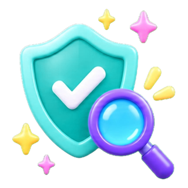
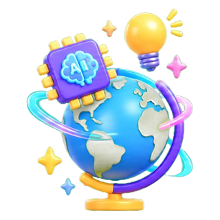
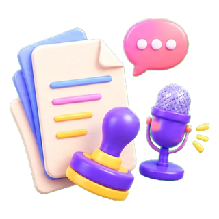
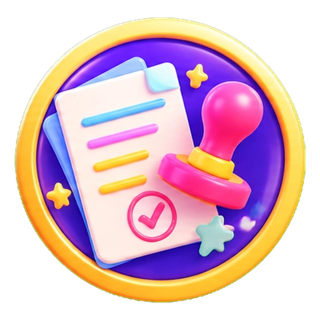
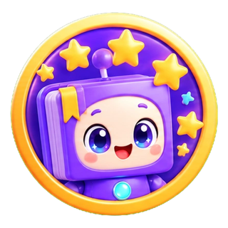

노트북LM으로
수업과 업무를 바꾸는 하루
내 자료에서 답을 찾는 AI. 교과서 한 권으로 슬라이드·오디오·영상을 만들고, 학교교육계획 한 파일로 업무 챗봇을 세웁니다.
오늘 가져가실 것

근거 있는 답
교과서·공문·규정을 소스로 넣고, 소스 안에서만 답하게 하는 법
수업 자료 한 세트
슬라이드 → 오디오 → 동영상 → 인포그래픽, 같은 소스로 한 번에

업무 10분 단축
회의 녹음 → 회의록, HWPX 서식 채우기, 메시지 작성실

그대로 쓰지 않는 습관
추론 표시, 질문으로 끝내기, 교사가 다시 확인하는 네 가지
연수 흐름
다섯 부분으로 진행합니다. 실습은 프롬프트 저장소의 같은 번호 묶음에서 바로 복사할 수 있습니다.

Ⅰ AI 시대와 노트북LM
직장인·교사·학생의 AI 활용 현황, 교육자의 역할 변화(제작자 → 활용자), 생성형 AI 지형도와 NotebookLM이 다른 점.

Ⅱ NotebookLM 시작하기
소스 · 채팅 · 스튜디오 3단 패널, 소스 넣기, 채팅 설정으로 전문가 역할 주기.
- 실습 1규정·매뉴얼 챗봇
- 실습 2교과서 읽히고 추론 확인

Ⅲ 교수·학습 자료 제작 심화
교과서 PDF + 3×3 캐릭터 PNG로 슬라이드 → 오디오 → 동영상 → 인포그래픽·플래시카드. 그림동화책 슬라이드.
- 실습 3개요 → 슬라이드 → 캐릭터
- 실습 4오디오 토론 · Short/Explainer
- 실습 5인포그래픽·마인드맵·플래시카드

Ⅳ 업무 지원 자료 제작
학교교육계획 올인원, 공문 체크리스트, 회의 녹음 → 회의록, HWPX 서식 채우기, 교사 메시지 작성실.
- 실습 6교육계획 챗봇 + 총회 슬라이드
- 실습 7HWPX 회의록 · 가정통신문

Ⅴ AI 활용 시 유의점
정확성, 저작권, 개인정보, 비판적 사고. 결과물을 그대로 쓰지 않는 습관.
- 자료(소스)에 근거하게 한다. 없는 내용은 "추론"으로 표시하게 한다.
- 학생용 자료는 정답을 먼저 말하지 않고 질문으로 끝내게 한다.
- 결과물을 그대로 쓰지 않는다. 교과 정확성·학생 수준·수업 목적을 교사가 다시 확인한다.
- 개요 → 생성 → 검토 → 수정의 순서로 대화한다.
프롬프트 저장소
[ ] 안은 우리 반·우리 학교에 맞게 바꾸는 자리입니다. 복사 뒤 학년·교과·단원·인원만 고쳐도 바로 쓸 수 있습니다.
실습 자료·링크
연수 중 실제로 열어 쓰는 사이트와 파일입니다. 파일은 연수 패들렛의 '실습파일' 칸에서 내려받습니다.
실습 파일 (패들렛 '실습파일' 칸)
- 재료 1 교과서 PDF — 3학년 2학기 사회 「교통의 변화로 달라진 생활 모습」(105~107쪽), 5학년 1학기 과학 「지층과 화석」
- 재료 2 3×3 캐릭터 PNG — 슬라이드 디자인과 등장인물의 기준이 되는 학급 캐릭터 세트
- 2022 개정 교육과정 성취기준 PDF
- 학교교육계획 PDF (올인원 챗봇·총회 PPT 실습)
- HWPX 서식: 교수학습과정안 · 회의록 · 물품선정위원회 회의록 · 가정통신문 · 수업협의록
- 가상 회의 녹음(mp3) — 회의록 자동 작성 실습
검토 · 유의점
AI가 만든 것을 교실과 공문서에 쓰기 전, 교사가 확인하는 것들입니다.
정보의 정확성
교과서·지침과 대조한다. "이 답변 중 소스에 없는 내용이 있다면 어디인지 표시해줘"로 근거를 되묻는다.
저작권
생성 이미지·음성·영상의 출처와 이용 범위를 확인하고, 교과서 PDF는 수업 목적 범위 안에서만 소스로 쓴다.
개인정보
학생 이름·사진·성적·상담 내용을 소스로 올리지 않는다. 생기부·상담 기록은 가명 처리 후 구조만 참고한다.
비판적 사고
학생에게 AI 결과물을 보여줄 때는 "맞는지 함께 확인해 보자"는 활동으로 설계한다. 정답을 먼저 주지 않는다.
학생 수준
어휘·문장 길이·장면 수를 학년에 맞게 다시 요청한다. "글을 2~3문장 이내로 줄여줘", "쉬운 말로 바꿔줘".
공문서 사실 확인
회의록·계획서는 "확실하지 않은 내용은 '확인 필요'로 표시"하게 하고, 날짜·수치·담당자는 교사가 채운다.
결과물 나눔
실습에서 만든 슬라이드·오디오·영상·회의록을 패들렛에 올려 서로 보고, 연수 뒤에도 꺼내 쓸 수 있게 합니다.
연수 당일 QR로 안내오늘의 배지
실습을 하나 마칠 때마다 하나씩. 다섯 개를 모으면 노트북LM 디자이너!




나눌 때 한 줄 메모
- 어떤 소스를 넣었는지 (교과서 쪽수, 캐릭터 세트)
- 어떤 프롬프트를 썼는지 (저장소 번호)
- 다시 만든다면 바꾸고 싶은 점 한 가지